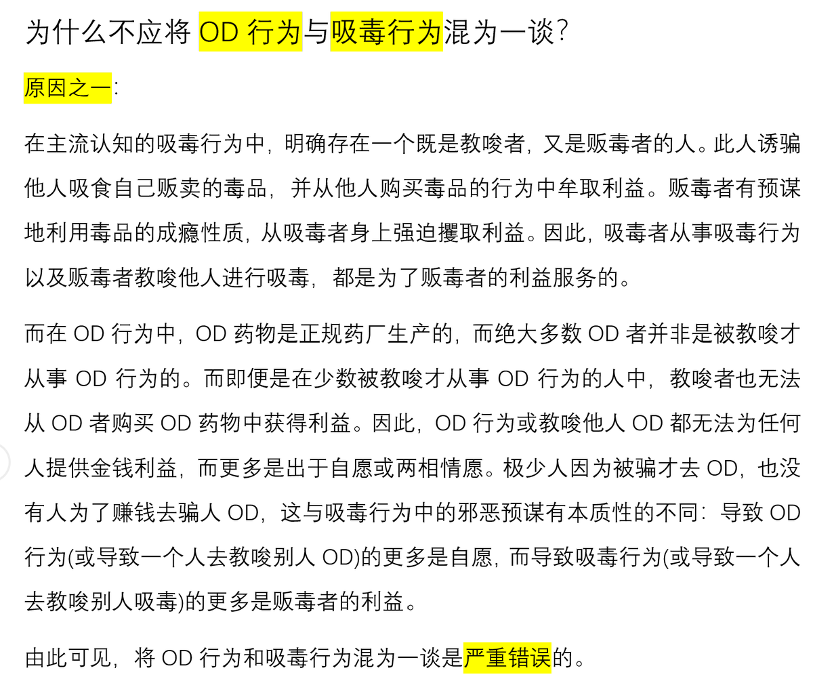

@SalviaSWC （1/2）私以为二者的区别只在于使用物质的不同，一个是合法的药物，一个是法律认定为非法的管制物质，正如一般的精神活性物质和毒品的区别一样，它们大部分只是法律地位上的区别。从目的角度对二者进区分是无力的，存在不因为教唆而吸毒的人，也有因为教唆而od的人。


为什么不应将OD行为与吸毒行为混为一谈？
上次没写好，这次改一下，上次未能突出重点🥺
重点是教唆者和获益者是否等同。因此，导致OD行为的更多是自愿，而导致吸毒行为的更多是利益，而且这个利益是犯罪分子的。
(只是提供一个视角。这个问题不好解释，难免有疏漏，仅当抛砖引玉，欢迎大家讨论🥹) https://t.co/4nHFePbaEQ https://t.co/Zj7csakDIX
上次没写好，这次改一下，上次未能突出重点🥺
重点是教唆者和获益者是否等同。因此，导致OD行为的更多是自愿，而导致吸毒行为的更多是利益，而且这个利益是犯罪分子的。
(只是提供一个视角。这个问题不好解释，难免有疏漏，仅当抛砖引玉，欢迎大家讨论🥹) https://t.co/4nHFePbaEQ https://t.co/Zj7csakDIX